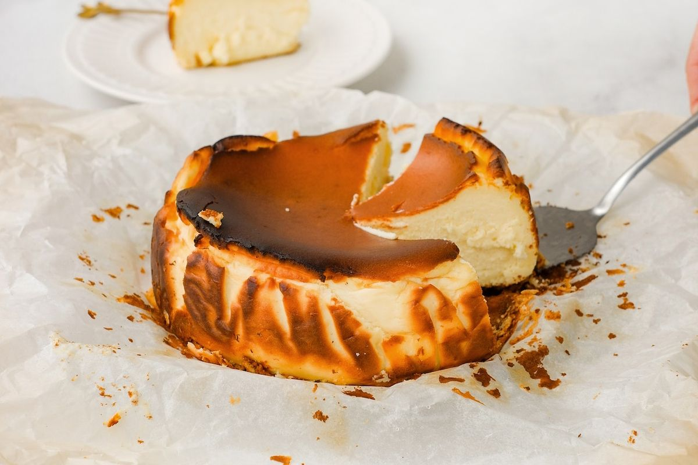

Resep Basque Burnt Cheesecake

Cheesecake khas Basque dengan bagian atas yang caramelized dan tekstur lembut di dalam.
Bahan-bahan:
- 500 gram cream cheese
- 200 gram gula pasir
- 4 butir telur
- 250 ml krim kental
- 30 gram tepung terigu
- 1 sdt ekstrak vanila
Cara Membuat:
- Kocok cream cheese dan gula hingga lembut.
- Tambahkan telur satu per satu sambil terus diaduk.
- Masukkan krim kental, tepung, dan vanila, aduk hingga rata.
- Tuang adonan ke loyang yang sudah dialasi kertas roti.
- Panggang di suhu 220°C selama 30-40 menit hingga bagian atas kecokelatan.
- Dinginkan dan sajikan.